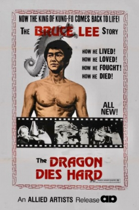

Also known as:Golden Sun (original title)
Country:ZH, 96 minutes
Spoken languages:
Genres:Action
Director(s):Li Kuan-Chang
Writer(s):Yen Chung
Video Codec:Unknown
Number: 1367


Certification:
Storyline:
Stone, a martial arts teacher and avid Bruce Lee fan, is crushed when he learns of his hero's sudden death. After a night of trying to drink himself out of his depression, Stone receives a vision of Lee instructing him to investigate the circumstances of master's death. Stone soon finds that Lee was the victim of foul play, and quickly puts into action his plan for bringing the murderers to justice.
Cast:


Medium: Original DVD,
Loaned: No
Aspect ratio: Unknown